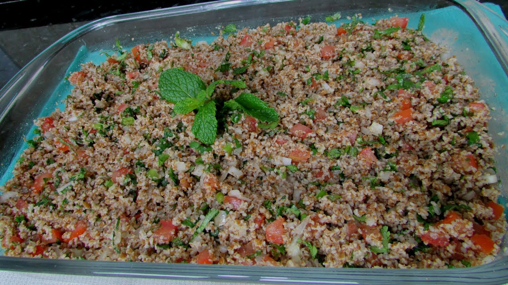

Tabbouleh

Description:
Refreshing salad with bulgur wheat and green herbs.
Ingredients:
- 1/2 cup bulgur wheat
- 4 firm Roma tomatoes, very finely chopped
- 1 English cucumber (hothouse cucumber), very finely chopped
- 2 bunches parsley, part of the stems removed, washed and well-dried, very finely chopped
- 12-15 fresh mint leaves, stems removed, washed, well-dried, very finely chopped
- 4 green onions, white and green parts, very finely chopped
- Salt
- 3-4 tablespoon lemon juice
- 3-4 tablespoon extra virgin olive oil
- 6 olives sliced without pit
- Romaine lettuce leaves to serve, optional
Steps:
- Wash the bulgur wheat and soak it in water for 5-7 minute. Drain very well (squeeze the bulgur wheat by hand to get rid of any excess water). Set aside.
- Very finely chop the vegetables, herbs and green onions as indicated above. Be sure to place the tomatoes in a colander to drain excess juice.
- Place the chopped vegetables, herbs and green onions in a mixing bowl or dish. Add the bulgur and season with salt. Mix gently.
- Now add the the lime juice and olive oil and mix again.
- For best results, cover the tabouli and refrigerate for 30 minutes. Transfer to a serving platter. If you like, serve the tabouli with a side of pita and romaine lettuce leaves, which act as wraps or "boats" for the tabouli.